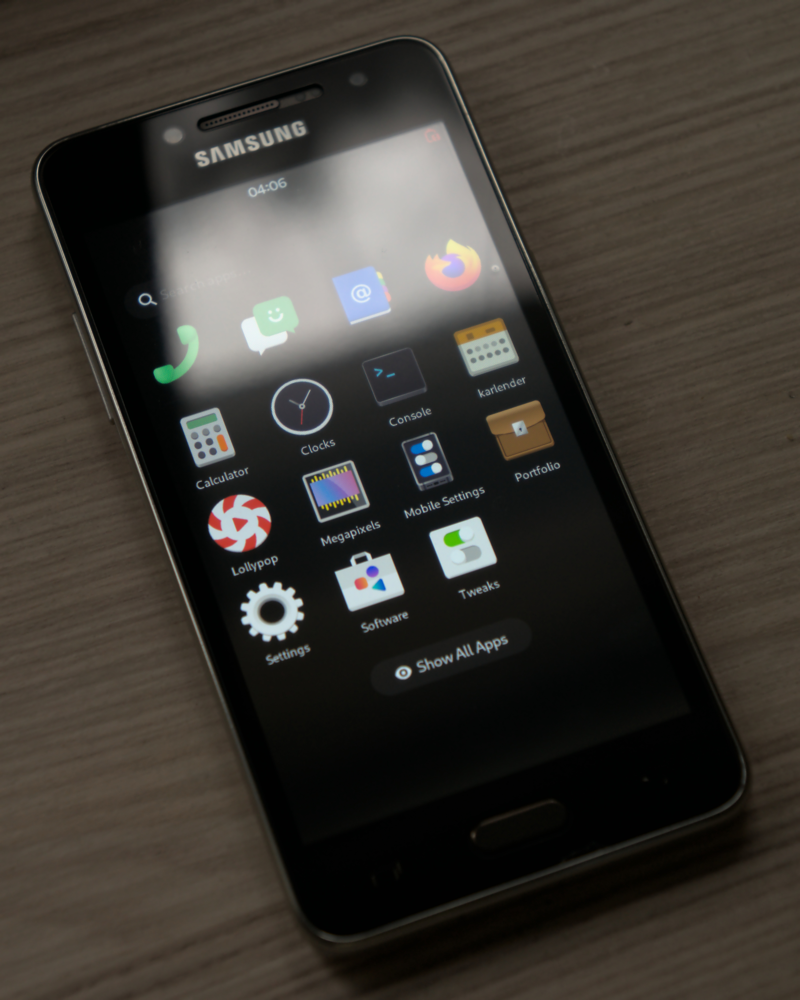

Samsung Galaxy Grand Prime Plus (samsung-grandpplte)
Jump to navigation
Jump to search
|
 Running Phosh | |
| Manufacturer | Samsung |
|---|---|
| Name | Galaxy Grand Prime+ |
| Codename | samsung-grandpplte |
| Released | 2016 |
| Category | testing |
| Original software | Android 6.0.1 |
| Hardware | |
| Chipset | MediaTek MT6737T |
| CPU | 4x 1.44 GHz Cortex-A53 |
| GPU | Mali-T720 MP2 |
| Display | 540x960 LCD |
| Storage | 8 GB |
| Memory | 1.5 GB |
| Architecture | aarch64 |
{kind=link}
| USB Networking |
Works
|
|---|---|
| Flashing |
Works
|
| Touchscreen |
Works
|
| Display |
Works
|
| WiFi |
Broken
|
| FDE |
Broken
|
| Mainline |
Works
|
| Battery |
Broken
|
| 3D Acceleration |
Works
|
| Audio |
Broken
|
| Bluetooth |
Broken
|
| Camera |
Broken
|
| GPS |
Broken
|
| Mobile data |
Broken
|
| SMS |
Broken
|
| Calls |
Broken
|
| USB OTG |
Broken
|
| NFC |
Unavailable
|
| Accelerometer |
Works
|
|---|---|
| Magnetometer |
Unavailable
|
| Ambient Light |
Unavailable
|
| Proximity |
Broken
|
| Hall Effect |
Unavailable
|
| Barometer |
Unavailable
|
| Power Sensor |
Unavailable
|
| Camera Flash | |
|---|---|
| Keyboard |
Unavailable
|
| Touchpad |
Unavailable
|
| USB-A |
Unavailable
|
| HDMI/DP |
Unavailable
|
| Ir TX |
Unavailable
|
| Ir RX | |
| Stylus | |
| Haptics | |
| Ethernet | |
| FOSS bootloader |
Partial
|
| Primary Bootloader |
Broken
|
|---|---|
| Secondary Bootloader |
Works
|
| Mainline |
Broken
|
| Internal Storage |
Works
|
| SD card |
Broken
|
| USB Host | |
| USB Peripheral | |
| Display |
Broken
|
| Keyboard |
Unavailable
|
| Buttons |
Works
|
| Note: This page is about Samsung Galaxy Grand Prime Plus based on MediaTek MT6737T. |
Contributors
- Tooniis
Users owning this device
- Tooniis (Notes: SM-G532F)
How to enter flash mode
While turned off, hold Power+Home+Volume Down, then a menu will appear. Press Volume Up to proceed to flash mode.
UART
Accessing UART is possible through the microUSB port by putting a 619kΩ resistor between the ID pin and ground. Read Serial debugging for more on that. Baud rate is 115200.
Status
| Feature | Components | Status | |
|---|---|---|---|
| USB | Inventra MUSB1
MediaTek T-PHY1 |
P | Limited to peripheral mode. PHY driver needs some work to enable host mode. |
| eMMC | MediaTek MSDC1
Samsung KMQN10006B-B318 |
P | Limited to HS200 mode. HS400 causes some tuning issues. MSDC driver needs more work. |
| microSD Slot | MediaTek MSDC1 | N | Card doesn't respond to commands. Possible power issue. |
| Display | Samsung S6D78A0
MediaTek DISPSYS1 |
Y | |
| GPU | ARM Mali-T7201 | Y | |
| WiFi | MediaTek CONSYS1 | N | |
| Bluetooth | N | ||
| GNSS | N | ||
| Modem | TBD | N | |
| Audio Codec | MediaTek MT6328 | N | |
| Video Codec | MediaTek VENCSYS1
MediaTek VDECSYS1 |
N | |
| Battery | Samsung 1ICP6/57/61
Samsung S2MU005 |
N | S2MU005 PMIC needs drivers. |
| Rear Camera | TBD
MediaTek IMGSYS1 |
N | |
| Front Camera | TBD
MediaTek IMGSYS1 |
N | |
| Accelerometer | Bosch BMA254 | Y | |
| Proximity Sensor | Sharp GP2AP070S00F | N | |
| Touchscreen | Zinitix BT541 | Y | Using bit-banged I2C for now. Hardware I2C driver needs more work. |
| Touchkeys | N | ||
| Buttons | GPIO controller1
MediaTek MT6328 |
Y | |
| Haptics | MediaTek MT6328
ERM |
Y | |
| LEDs | Samsung S2MU005 | N | S2MU005 PMIC needs drivers. |
1: Part of SoC